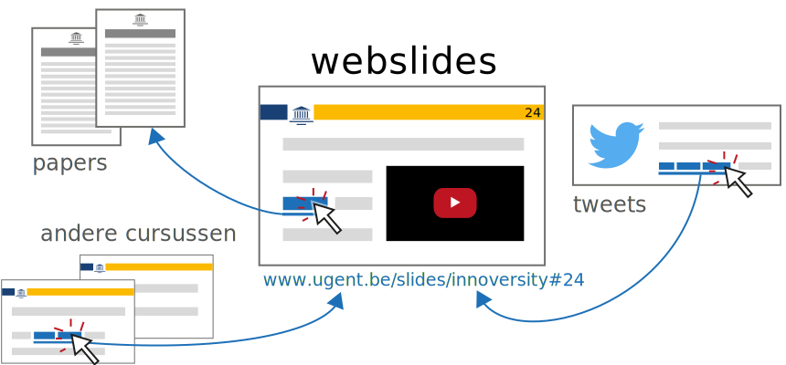
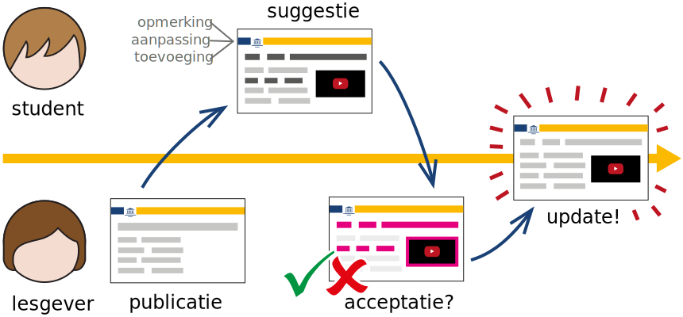
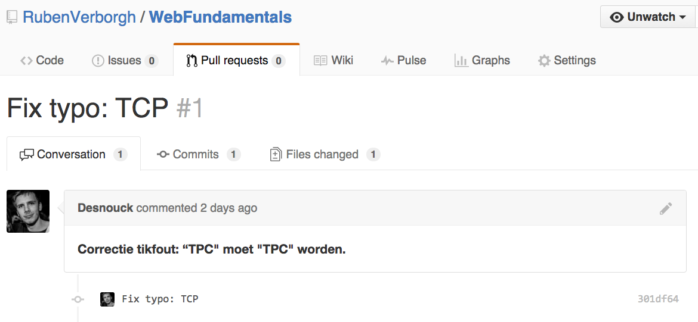

Maak slides zoals websites

Bewerk slides zoals open-source

Open Webslides voor studenten
- webslides werken overal en op ieder toestel
- evoluerende cursusslides
- meer gerichte feedback
Open Webslides voor lesgevers
- actuele slides door snelle updates
- eenvoudig beheer samen met collega's
- (internationale) erkenning voor onderwijsinzet
Open Webslides voor UGent
-
verschillende cursussen linken naar elkaar
- activerend onderwijs bevorderen
- maatschappelijke en economische valorisatie
Concrete implementatie
- geen product, wel mindset
- kennisnetwerk met support voor tailored aanpak
Open Webslides Netwerk

Contingency plan
optimaliseren van tools
Co-innovatie begint hier
- alles wat het Web kan, kunnen webslides ook
- meesurfen op toekomstige webinnovatie
- springplank voor multidisciplinaire innovatie
Open Webslides in de praktijk

 Raphaël Caluwé (via mobile):
We kunnen zelfs naar iedere slide linken op Facebook
en daarover discussiëren.
Raphaël Caluwé (via mobile):
We kunnen zelfs naar iedere slide linken op Facebook
en daarover discussiëren.